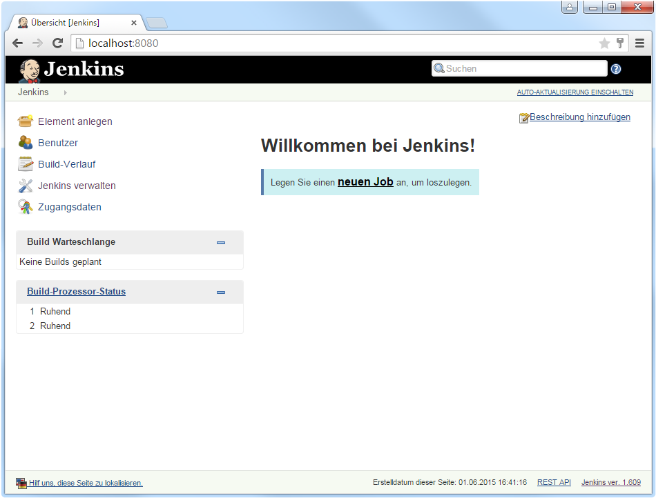
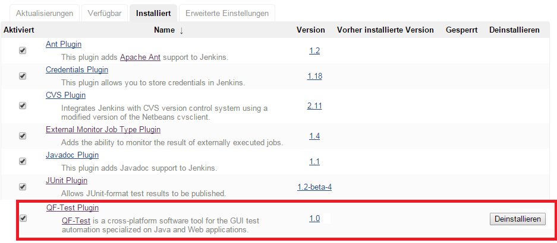

| Version 6.0.3 |
 Das Video 'QF-Test Jenkins
Plugin' zeigt die Einrichtung und Konfiguration des Plugins.
Das Video 'QF-Test Jenkins
Plugin' zeigt die Einrichtung und Konfiguration des Plugins.
Bei Jenkins/Hudson (http://jenkins-ci.org) handelt es sich um Continuous-Integration-Build-Tools. Sie sind somit dazu gedacht, die Ausführung des Build-Prozesses eines Software-Projektes zu steuern und zu überwachen sowie die Ergebnisse zu verwalten. Ein wichtiger Schritt in diesem Build-Prozess sind automatisierte Tests, u.a. auch GUI-Tests mit QF-Test.
Eine Verwendung von QF-Test in Kombination mit Jenkins/Hudson kann folgende Vorteile bringen:
Da Jenkins und Hudson eine gemeinsame Vergangenheit teilen, wird in den folgenden Kapiteln Jenkins als Repräsentant verwendet.
Hinweis
Für GUI Tests darf Jenkins nicht als Service eingerichtet sein sondern muss innerhalb
einer echten Benutzer-Sitzung laufen. Unter Windows konfiguriert der Jenkins
.msi Installer leider ohne Rückfrage direkt den Betrieb als Service,
weshalb wir von diesem abraten. Bitte stellen Sie sicher, dass Jenkins als echter
Benutzerprozess startet, wie es unten beschrieben wird.
Die Installation von Jenkins beschränkt sich auf das Herunterladen des war Archivs
von http://jenkins-ci.org/latest/jenkins.war
und das Starten mittels java -jar jenkins.war.
Sobald Jenkins erfolgreich läuft, kann mittels eines Browsers über die URL
http://localhost:8080 auf die Weboberfläche
zugegriffen werden, welche sich wie folgt darstellt:
|
|  | ||
|
| Abbildung 26.4: Jenkins nach dem Start. | ||
GUI-Tests benötigen einen ungesperrten, aktiven Desktop mit einer aktiven Benutzer-Session. So verhält sich das SUT genauso wie bei einem normalen Benutzer. Deshalb ist es nicht möglich, den Agenten als Windows-Service zu starten, sondern ein realer (Test-) Benutzer muss angemeldet sein (z.B. mittels Auto-Login) und Start des Agenten über Windows-Autostart. Bildschirmsperren müssen deaktiviert sein. Sie finden im Kapitel Aufsetzen von Testsystemen nützliche Tipps und Tricks für die Einrichtung des Jenkins/Hudson Prozesses.
Jenkins erlaubt die Ausführung von Aufgaben auf verteilten Rechnern. Dies ist natürlich auch für GUI-Tests relevant. Aufgrund Ihrer Natur werden GUI-Tests typischerweise nicht direkt auf dem zentralen Buildserver ausgeführt. Zusätzlich sollen häufig Tests für verschiedene Umgebungen, Betriebssysteme und Versionen des SUTs durchgeführt werden.
Auf einem dezentralen Rechner muss ein Jenkins Agent gestartet werden, um sich zum zentralen Jenkins Server zu verbinden und dann auf auszuführende Aufgaben zu warten. Wie in der Dokumentation von Jenkins beschrieben, gibt es verschiedene Möglichkeiten diesen Agenten zu starten, aber damit die GUI-Tests vollständig funktionieren können, müssen die Agenten via Java Web Start gestartet werden.
HinweisWeitere technische Hintergrundinformation gibt FAQ 14.
Das QF-Test Plugin ermöglicht die Ausführung von QF-Test-Suiten in Jenkins. Um das Plugin zu installieren, öffnen Sie das Jenkins Dashboard und gehen auf "Jenkins verwalten", gefolgt von "Plugins verwalten". Wählen Sie das QF-Test Plugin im "Verfügbar" Tab aus und klicken Sie auf den Installieren-Button. Das QF-Test Plugin wird auch das JUNIT und das HTML-Publisher Plugin herunterladen, falls diese noch nicht installiert sind. Schließlich muss Jenkins neugestartet werden um die Installation abzuschließen. Das QF-Test Plugin erscheint nun in dem "Installiert" Tab, wie in Abbildung 20.2 gesehen werden kann.
HinweisJenkins benutzt automatisch die zuletzt installierte Version von QF-Test. Falls eine andere Version genutzt werden soll, kann der Pfad in der QF-Test Sektion in den Jenkins Einstellungen angegeben werden (Jenkins verwalten -> System konfigurieren).
|
|  | ||
|
| Abbildung 26.5: QF-Test Plugin installiert. | ||
Sobald das QF-Test Plugin erfolgreich installiert wurde kann man die Testausführung mit QF-Test in den Jenkins-Buildprozess integrieren. Eine detaillierte Handreichung dazu findet sich in der Dokumentation des QF-Test Plugins unter https://www.qfs.de/en/jenkins.
| Letzte Änderung: 6.9.2022 Copyright © 1999-2022 Quality First Software GmbH |